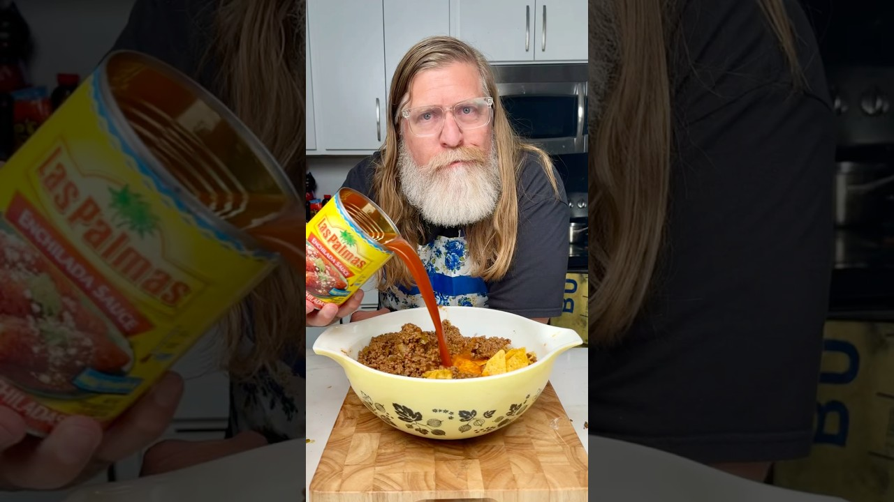

Reconstructed from the video's narration (spoken recipe) — the video has no written recipe in its description. Quantities and steps below are only those actually stated out loud; see "Gaps in this export" for what wasn't specified.
Source: Drew Cooks – YouTube
1 lb ground beef
Cooking oil, for the pan
1 packet taco seasoning (your favorite)
1/2 cup salsa
1 can diced green chilies
1 bag tortilla chips
1 large can enchilada sauce
Shredded cheese — a big handful for mixing, plus more for a layer on top (amount not stated)
Sour cream, to serve (optional)
Sliced black olives, to garnish (optional)
Heat oil in a pan over medium-high. Add 1 lb ground beef, break it up, brown it, and drain.
Stir in a packet of taco seasoning, 1/2 cup salsa, and a can of diced green chilies until well combined. Set aside.
Put a bag of tortilla chips in a large mixing bowl, gently breaking them up a little as you go.
Add the meat mixture on top of the chips.
Add a large can of enchilada sauce and a big handful of shredded cheese.
Mix everything together well with hands or a spoon so the chips are nicely coated.
Transfer the mixture to a greased 9x13 baking dish.
Top with a layer of shredded cheese.
Cover with foil and bake at 350°F for about 45 minutes.
Remove from the oven and carefully take off the foil. For toastier cheese, return it to the oven uncovered for a few more minutes.
Let it cool before serving.
Serve on plates, topped with sour cream and sliced black olives if desired.
Described as a "lazy enchiladas" / enchilada–nacho hybrid casserole.
The extra uncovered bake in step 10 is optional, for browned cheese.
Gap in this export: Size of the taco seasoning packet
Gap in this export: Size of the diced green chilies can
Gap in this export: Size of the tortilla chip bag
Gap in this export: Size of the "large" enchilada sauce can
Gap in this export: Amount of shredded cheese (for mixing and for the top layer)
Gap in this export: Amount of cooking oil
Gap in this export: Prep time and number of servings